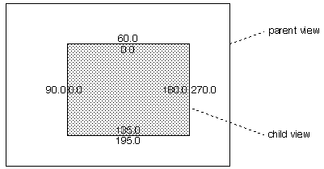
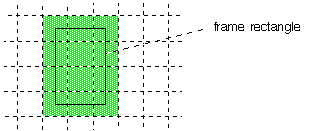
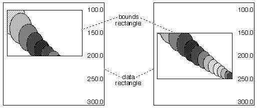
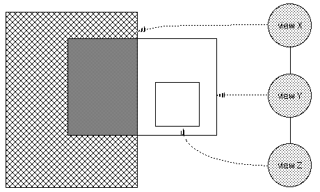
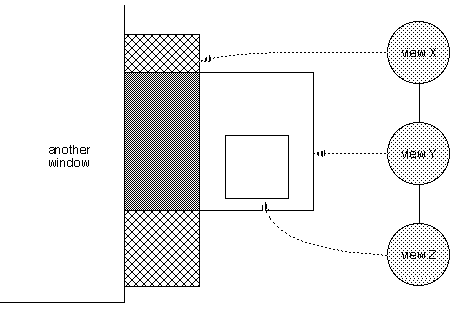
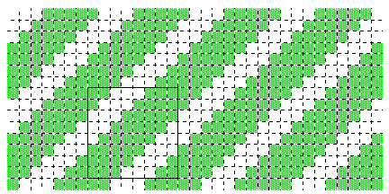
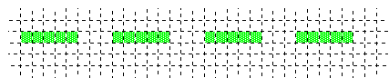

| The Interface Kit Table of Contents | The Interface Kit Index |
This section discusses the framework in which BViews draw. Detailed descriptions of the functions mentioned here can be found in the BView and BWindow class descriptions.
Ech view is assigned a coordinate system of its own. By default, the coordinate origin—(0.0, 0.0)—is located at the left top corner of the view rectangle. The x-axis extends to the right and the y-axis extends downward; coordinate units count screen pixels. (For a detailed discussion of the coordinate systems assumed by the Interface Kit, see "The Coordinate Space" on page11.)
When a view is added as a child of another view, it's located within the coordinate system of its parent. A child is considered part of the contents of the parent view. If the parent moves, the child moves with it; if the parent view scrolls its contents, the child view is shifted along with everything else in the view.
Since each view retains its own internal coordinate system no matter who its parent is, where it's located within the parent, or where the parent is located, a BView's drawing and message-handling code doesn't need to be concerned about anything exterior to itself. To do its work, a BView need look no farther than the boundaries of its own view rectangle.
Although a BView doesn't have to look outside its own boundaries, it does have to know where those boundaries are. It can get this information in two forms:
The following illustration shows a child view 180.0 units wide and 135.0 units high. When viewed from the outside, from the perspective of its parent's coordinate system, it has a frame rectangle with left, top, right, and bottom coordinates at 90.0, 60.0, 270.0, and 195.0, respectively. But when viewed from the inside, in the view's own coordinate system, it has a bounds rectangle with coordinates at 0.0, 0.0, 180.0, and 135.0:

When a view moves to a new location in its parent, its frame rectangle changes but not its bounds rectangle. When a view scrolls its contents, its bounds rectangle changes, but not its frame. The frame rectangle positions the view in the world outside; the bounds rectangle positions the contents inside the view.
Since a BView does its work in its own coordinate system, it refers to the bounds rectangle more often than to the frame rectangle.
Because views are areas within windows and windows are displayed on-screen, the edges of a view must line up on rows and columns of screen pixels. It's easy to achieve this result, since coordinate units correspond to screen pixels; one unit is the distance from the center of a pixel to the center of an adjacent pixel. Therefore, all you must do is define the view rectangle with nonfractional coordinates, as in the illustration above.
It was mentioned that the child view in the illustration above is 180.0 coordinate units wide and 135.0 units high. However, this view actually covers 181 pixel columns and 136 pixel rows on-screen.
Two facts conspire to determine this result. First, as stated, coordinate units correspond to screen pixels. Second, the coordinate axes don't lie between pixels but right in the middle of them. The x-axis splits a row of pixels and the y-axis runs down the center of a column of pixels; the coordinate origin where they meet is at the very center of a pixel. Therefore, a view rectangle covers one more pixel in each direction than its coordinate dimensions would indicate.
Imagine an implausibly tiny frame rectangle like the one in the following diagram:

Since the pixels on the edges of this 2.0 * 3.0 rectangle are treated as being inside the rectangle, the view covers a 3 pixel * 4 pixel area.
This fact is important when laying out views and drawing in the bounds rectangle (or drawing any rectangle, for that matter). However, when discussing view coordinates and rectangles in general, it's easier and more accurate to speak in terms of coordinate values, not pixels—and that's the practice in this chapter. However, see "Mapping Coordinates to Pixels" on page14 for more on how coordinate values relate to pixels.
A BView scrolls its contents by shifting coordinate values within the view rectangle—that is, by altering the bounds rectangle. If, for example, the top of a view's bounds rectangle is at 100.0 and its bottom is at 200.0, scrolling downward 50.0 units would put the top at 150.0 and the bottom at 250.0. Contents of the view with y-coordinate values of 150.0 to 200.0, originally displayed in the bottom half of the view, would be shifted to the top half. Contents with y-coordinate values from 200.0 to 250.0, previously unseen, would become visible at the bottom of the view, as shown in the following illustration:

Scrolling doesn't move the view—it doesn't alter the frame rectangle—it moves only what's displayed inside the view. In the illustration above, a "data rectangle" encloses everything the BView is capable of drawing. For example, if the view is able to display an entire book, the data rectangle would be large enough to enclose all the lines and pages of the book laid end to end. However, since a BView can draw only within its bounds rectangle, everything in the data rectangle with coordinates that fall outside the bounds rectangle would be invisible. To make unseen data visible, the bounds rectangle must change the coordinates that it encompasses. Scrolling can be thought of as sliding the view's bounds rectangle to a new position on its data rectangle, as is shown in the illustration above. However, as it appears to the user, it's moving the data rectangle under the bounds rectangle. The view doesn't move; the data does.
The Application Server clips the images that a BView produces to the region where it's permitted to draw.
This region is never any larger than the view's bounds rectangle; a view cannot draw outside its bounds. Furthermore, since a child is considered part of its parent, a view can't draw outside the bounds rectangle of its parent either—or, for that matter, outside the bounds rectangle of any ancestor view. In addition, since child views draw after, and therefore logically in front of, their parents, a view concedes some of its territory to its children.
Thus, the visible region of a view is the part of its bounds rectangle that's inside the bounds rectangles of all its ancestors, minus the frame rectangles of its children. This is illustrated in the following figure. It shows a hierarchy of three views—X, Y, and Z. The area filled with a crosshatch pattern is the visible region of view X; it omits the area occupied by its child, view Y. The visible region of view Y is colored dark gray; it omits the part of the view that lies outside its parent. View Z has no visible region, for it lies outside the bounds rectangle of its ancestor, view X:

The visible region of a view might be further restricted if its window is obscured by another window or if the window it's in lies partially off-screen. The visible region includes only those areas that are actually visible to the user. For example, if the three views in the previous illustration were in a window that was partially blocked by another window, their visible regions might be considerably smaller. This is shown in the next figure:

Note that in this case, view X has a discontinuous visible region.
The Application Server clips the drawing that a view does to a region that's never any larger than the visible region. On occasion, it may be smaller. For the sake of efficiency, while a view is being automatically updated, the clipping region excludes portions of the visible region that don't need to be redrawn:
An application can also limit the clipping region for a view by passing a BRegion object to ConstrainClippingRegion(). The clipping region won't include any areas that aren't in the region passed. The Application Server calculates the clipping region as it normally would but intersects it with the specified region.
You can obtain the current clipping region for a view by calling GetClippingRegion(). (See also the BRegion class description.)
Every view has a basic, underlying color. It's the color that fills the view rectangle before the BView does any drawing. The Application Server paints the view with this color before any view-specific drawing functions are called. The user may catch a glimpse of the color when the view is first shown on-screen, when it's resized larger, and when it's erased in preparation for an update. It will also be seen wherever the BView fails to draw in the visible region.
In a sense, the view color is the canvas on which the BView draws. It doesn't enter into any of the object's drawing operations except to provide a background. Although it's one of the BView's graphics parameters, it's not one that any drawing functions refer to.
The default view color is white. You can assign a different color to a view by calling BView's SetViewColor() function. If you set the view color to B_TRANSPARENT_COLOR, the Application Server won't erase the view's clipping region before an update. This is appropriate only if the view erases itself by touching every pixel in the clipping region when it draws.
Every view may additionally have a background bitmap. The Application Server draws this bitmap after it fills in the view color and before any view-specific drawing functions are called. The view color will be visible in regions the background bitmap doesn't cover.
A view begins life without a background bitmap. A background bitmap may be added with BView's SetViewBitmap() function and subsequently removed with ClearViewBitmap().
Views draw through the following set of primitive functions:
The way these functions work depends not only on the values that they're passed—the particular string, bitmap, arc, or ellipse that's to be drawn—but on previously set values in the BView's graphics environment.
Each BView object maintains its own graphics environment for drawing. The view color, coordinate system, and clipping region are fundamental parts of that environment, but not the only parts. It also includes a number of parameters that can be set and reset at will to affect the next image drawn. These parameters are:
(The high and low colors roughly match what other systems call the fore and back, or foreground and background, colors. However, neither color truly represents the color of the foreground or background. The terminology high and low is meant to keep the sense of two opposing colors and to match how they're defined in a pattern. A pattern bit is turned on for the high color and turned off for the low color. See the SetHighColor() and SetLowColor() functions in the BView class description and the "Patterns" section on .)
By default, a BView's graphics parameters are set to the following values:
| Font | The system plain font (be_plain_font) |
| Pen position | (0.0, 0.0) |
| Pen size | 1.0 coordinate units |
| High color | Black (red, green, and blue components all equal to 0) |
| Low color | White (red, green, and blue components all equal to 255) |
| Drawing mode | Copy mode (B_OP_COPY) |
| View color | White (red, green, and blue components all equal to 255) |
| Clipping region | The visible region of the view |
| Coordinate system | Origin at the left top corner of the bounds rectangle |
However, as "Views and the Server" on page24 explains, these values have meaning only when the BView is assigned to a window.
The pen is a fiction that encompasses two properties of a view's graphics environment: the current drawing location and the thickness of stroked lines.
The pen location determines where the next image will be drawn—but only if another location isn't explicitly passed to the drawing function. Some drawing functions alter the pen location—as if the pen actually moves as it does the drawing—but usually it's set by calling MovePenBy() or MovePenTo().
The pen that draws lines (through the various Stroke...() functions) has a malleable tip that can be made broader or narrower by calling the SetPenSize() function. The larger the pen size, the thicker the line that it draws.
The pen size is expressed in coordinate units, which must be translated to a particular number of pixels for the display device. This is done by scaling the pen size to a device-specific value and rounding to the closest integer. For example, pen sizes of 2.6 and 3.3 would both translate to 3 pixels on-screen, but to 7 and 10 pixels respectively on a 300dpi printer.
The size is never rounded to 0; no matter how small the pen may be, the line never disappears. If the pen size is set to 0.0, the line will be as thin as possible—it will be drawn using the fewest possible pixels on the display device. (In other words, it will be rounded to 1 for all devices.)
If the pen size translates to a tip that's broader than 1 pixel, the line is drawn with the tip centered on the path of the line. Roughly the same number of pixels are colored on both sides of the path.
A later section, "Picking Pixels to Stroke and Fill" on page15, illustrates how pens of different sizes choose the pixels to be colored.
The high and low colors are specified as rgb_color values—full 32-bit values with separate red, green, and blue color components, plus an alpha component for transparency. Although there may sometimes be limitations on the colors that can be rendered on-screen, there are no restrictions on the colors that can be specified.
The way colors are specified for a bitmap depends on the color space in which they're interpreted. The color space determines the depth of the bitmap data (how many bits of information are stored for each pixel), the interpretation of the data (whether it represents shades of gray or true colors, whether it's segmented into color components, what the components are, and so on), and the arrangement of components within the data (whether big-endian or little-endian). These six basic color spaces are recognized:
| B_GRAY1 | One bit of data per pixel, where 1 is black and 0 is white. |
| B_GRAY8 | Eight bits of data per pixel, where a value of 255 is black and 0 is white. |
| B_CMAP8 | Eight bits of data per pixel, interpreted as an index into a list of 256 colors. The list is part of the system color map and is the same for all applications. |
| B_RGB15 | Three components of data per pixel—blue, green, and red, in that order—with 5 bits each for red, green, and blue. The first bit of the pixel data is not associated with any color component. |
| B_RGBA15 | Four components of data per pixel—blue, green, red, and alpha, in that order—with 5 bits each for red, green, and blue, and 1 bit for alpha. |
| B_RGB16 | Three components of data per pixel—blue, green, and red, in that order—with 5 bits each for red and blue, and 6 bits for green. |
| B_RGB32 | Four components of data per pixel—blue, green, red, and alpha, in that order—with 8 bits per component. A component value of 255 yields the maximum amount of red, green, or blue, and a value of 0 indicates the absence of that color. |
The components in the B_RGB32, B_RGB16, and B_RGB15 color spaces are meshed rather than separated into distinct planes; all four components are specified for the first pixel before the four components for the second pixel, and so on. The order of bytes for these two types is little-endian, which means that for B_RGB32 data, the component bytes appear in the order blue, green, red, and alpha.
Counterpart color spaces are defined for big-endian data. B_RGB32_BIG, B_RGB16_BIG, B_RGBA15_BIG, and B_RGB15_BIG, are equivalent to B_RGB32, B_RGB16, B_RGBA15, and B_RGB15—except for the order of bytes. The Be operating system retains data in the little-endian formats; the big-endian color spaces are defined only to label noncompatible data that the system must convert and to allow drivers to communicate precise formats to the operating system.
Alpha should be 0 for 100% transparent, or 255 (for 8-bit alpha channels) for 100% opaque. For 1-bit alpha channels, a value of 1 indicates opaque.
The screen can be configured to display colors in either the B_CMAP8, B_RGB15, or B_RGB32 color spaces. When it's in the B_CMAP8 or B_RGB15 color spaces, specified rgb_colors are displayed as the closest available color. (See the BBitmap and BScreen classes.)
Most functions that stroke a line or fill a closed shape don't draw directly in either the high or the low color. Rather they take a pattern, an arrangement of one or both colors that's repeated over the entire surface being drawn. A pattern might consist of just the high color, just the low color, or some combination of the two.
By combining the low color with the high color, patterns can produce dithered colors that lie somewhere between two hues in the B_CMAP8 color space. Patterns also permit drawing with less than the solid high color (for intermittent or broken lines, for example) and can take advantage of drawing modes that treat the low color as if it were transparent, as discussed in the next section.
A pattern is defined as an 8-pixel by 8-pixel square. The pattern type is 8 bytes long, with 1 byte per row and 1 bit per pixel. Rows are specified from top to bottom and pixels from left to right. Bits marked 1 designate the high color; those marked 0 designate the low color. For example, a pattern of wide diagonal stripes could be defined as follows:
pattern stripes = { 0xc7, 0x8f, 0x1f, 0x3e,
0x7c, 0xf8, 0xf1, 0xe3 };
Patterns repeat themselves across the screen, like tiles laid side by side. The pattern defined above looks like this:

The dotted lines in this illustration show the separation of the screen into pixels. The thicker black line outlines one 8 * 8 square that the pattern defines.
The outline of the shape being filled or the width of the line being stroked determines where the pattern is revealed. It's as if the screen was covered with the pattern just below the surface, and stroking or filling allowed some of it to show through. For example, stroking a 1-pixel wide horizontal path in the pattern illustrated above would result in a dotted line, with the dashes (in the high color) slightly longer than the spaces between (in the low color):

When stroking a line or filling a shape, the pattern serves as the source image for the current drawing mode, as explained in "Drawing Modes" next. The nature of the mode determines how the pattern interacts with the destination image, the image already in place.
The Interface Kit defines three patterns:
| B_SOLID_HIGH | Consists only of the high color. |
| B_SOLID_LOW | Has only the low color. |
| B_MIXED_COLORS | Mixes the two colors evenly, like the pattern on a checkerboard. |
B_SOLID_HIGH is the default pattern for all drawing functions. Applications can define as many other patterns as they need.
When a BView draws, it in effect transfers an image to a target location somewhere in the view rectangle. The drawing mode determines how the image being transferred interacts with the image already in place at that location. The image being transferred is known as the source image; it might be a bitmap or a pattern of some kind. The image already in place is known as the destination image.
In the simplest and most straightforward kind of drawing, the source image is simply painted over the destination; the source replaces the destination. However, there are other possibilities. There are ten different drawing modes—ten distinct ways of combining the source and destination images. The modes are designated by drawing_mode constants that can be passed to SetDrawingMode():
| B_OP_COPY | B_OP_ADD |
| B_OP_OVER | B_OP_SUBTRACT |
| B_OP_ERASE | B_OP_BLEND |
| B_OP_INVERT | B_OP_MIN |
| B_OP_SELECT | B_OP_MAX |
B_OP_COPY is the default mode and the simplest. It transfers the source image to the destination, replacing whatever was there before. The destination is ignored.
In the other modes, however, some of the destination might be preserved, or the source and destination might be combined to form a result that's different from either of them. For these modes, it's convenient to think of the source image as an image that exists somewhere independent of the destination location, even though it's not actually visible. It's the image that would be rendered at the destination in B_OP_COPY mode.
The modes work for all BView drawing functions—including those that stroke lines and fill shapes, those that draw characters, and those that image bitmaps. The way they work depends foremost on the nature of the source image—whether it's a pattern or a bitmap. For the Fill...() and Stroke...() functions, the source image is a pattern that has the same shape as the area being filled or the area the pen touches as it strokes a line. For DrawBitmap(), the source image is a rectangular bitmap.
In a sense, a pattern is simply a bitmap that's one bit deep. It's a bitmap consisting of two colors, one which maps to the current high color and another that maps to the current low color. As we shall see later, a B_MONOCHROME_1_BIT bitmap acts just like a pattern. However, patterns and bitmaps generally behave differently:
The way the drawing modes work also depends on the color space of the source image and the color space of the destination. The following discussion concentrates on drawing where the source and destination both contain colors. This is the most common case, and also the one that's most general.
The source and destination images can have different color spaces. For example, a source bitmap might be defined in the B_CMAP8 space while the destination is displayed in the full color B_RGB32 color space. The drawing operation merely combines the colors in the two images in some way. It doesn't transfer the color space of the source image to the destination. The image that results from the drawing operation will always be in the color space of the destination image.
When applied to colors, the ten drawing modes fall naturally into four groups:
The following paragraphs describe each of these groups in turn.
In B_OP_COPY mode, the source image replaces the destination. This is the default drawing mode and the one most commonly used. Because this mode doesn't have to test for particular color values in the source image, look at the colors in the destination, or compute colors in the result, it's also the fastest of the modes.
If the source image contains transparent pixels, their transparency will be retained in the result; the transparent value is copied just like any other color. However, the appearance of a transparent pixel when shown on-screen is indeterminate. If a source image has transparent portions, it's best to transfer it to the screen in B_OP_OVER or another mode. In all modes other than B_OP_COPY, a transparent pixel in a source bitmap preserves the color of the corresponding destination pixel.
Four drawing modes—B_OP_OVER, B_OP_ERASE, B_OP_INVERT, and B_OP_SELECT—are designed specifically to make use of transparency in the source image; they're able to preserve some of the destination image. In these modes (and only these modes) the low color in a source pattern acts just like transparency in a source bitmap.
Each of these modes has a different effect on the destination image—but only in those places where the source image is not transparent. One of the modes, B_OP_OVER, transfers some of the source image to the destination. The other three modes play with the destination in some way—erase it, invert it, or select colors in it—without regard to the source image. For these modes, the only thing that matters about the source image is where it's transparent and where it's not. Each of the four modes is described below:
By masking out the unwanted parts of a rectangular bitmap with transparent pixels, this mode can place an irregularly shaped source image in front of a background image. Transparency in the source foreground lets the destination background show through. The versatility of B_OP_OVER makes it the second most commonly used mode, after B_OP_COPY.
Although this mode can be used for selective erasing, it's simpler to erase by filling an area with the B_SOLID_LOW pattern in B_OP_COPY mode.
The inversion of an rgb_color is the complement of its color components. For example, the inversion of a red value of 58 would be 197 (255–58).
This is similar to the B_OP_INVERT mode, except that B_OP_SELECT affects at most only two colors in the destination image. The destination is preserved not only where the source is transparent, but also where its colors don't match the current high and low colors.
These four modes also work for monochrome images. If the source image is monochrome, the distinction between source bitmaps and source patterns breaks down. Two rules apply:
Three drawing modes—B_OP_ADD, B_OP_SUBTRACT, and B_OP_BLEND—combine the source and destination images, pixel by pixel, and color component by color component. As in most of the other modes, transparency in a source bitmap preserves the destination image in the result. Elsewhere, the result is a combination of the source and destination. The high and low colors of a source pattern aren't treated in any special way; they're handled just like other colors.
By adding a uniform gray to each pixel in the destination, for example, the whole destination image can be brightened by a constant amount.
For example, by subtracting a uniform amount from the red component of each pixel in the destination, the whole image can be made less red.
These modes work only for color images, not for monochrome ones. If the source or destination is specified in the B_CMAP8 color space, the color will be expanded to a full B_RGB32 value to compute the result; the result is then contracted to the closest color in the B_CMAP8 color space.
Two drawing modes—B_OP_MAX and B_OP_MIN—compare each pixel in the source image to the corresponding pixel in the destination image and select one to keep in the result. If the source pixel is transparent, both modes select the destination pixel. Otherwise, B_OP_MIN selects the darker of the two colors and B_OP_MAX selects the brighter of the two. If the source image is a uniform shade of gray, for example, B_OP_MAX would substitute that shade for every pixel in the destination image that was darker than the gray.
Like the blending modes, B_OP_MIN and B_OP_MAX work only for color images.
Windows lead a dual life—as on-screen entities provided by the Application Server and as BWindow objects in the application. BViews have a similar dual existence—each BView object has a shadow counterpart in the server. The server knows the view's location, its place in the window's hierarchy, its visible area, and the current state of its graphics parameters. Because it has this information, the server can more efficiently associate a user action with a particular view and interpret the BView's drawing instructions.
BWindows become known to the Application Server when they're constructed; creating a BWindow object causes the server to produce the window that the user will eventually see on-screen. A BView, on the other hand, has no effect on the server when it's constructed. It becomes known to the server only when it's attached to a BWindow. The server must look through the application's windows to see what views it has.
A BView that's not attached to a window therefore lacks a counterpart in the server. This restricts what some functions can do. Three groups of functions are affected:
However, the functions that set and return graphics parameters—such as SetFont(), SetDrawingMode(), PenLocation(), and SetHighColor()—are not restricted. A view's graphic state is kept within the server (where it's needed to carry out drawing instructions), but also cached by the BView. Therefore, it's possible to assign a value to a graphics parameter before the server knows about the view. The value is simply cached until the view becomes part of a window's view hierarchy; the BView then hands it to the server. The server and the client-side cache are always kept in synch.
Although you can set a BView's graphics parameters before it belongs to a window and has a counterpart in the Application Server, some of its initialization may need to wait until the BView receives an AttachedToWindow() notification informing it that it has been added to a window's view hierarchy. For example, if a view adopts the background color of its parent, it can only set the view color in AttachedToWindow():
void MyView::AttachedToWindow(void)
{
if ( Parent() )
SetViewColor(Parent()->ViewColor());
. . .
}
AttachedToWindow() is called for each view that's added to a window, beginning with the root view being attached, followed by each of its children, and so on down the hierarchy. After all views have been notified with an AttachedToWindow() function call, they each get an AllAttached() notification, but in the reverse order. A parent view that must adjust itself to calculations made by a child view when it's attached to a window can wait until AllAttached() to do the work.
These two function calls are matched by another pair—DetachedFromWindow() and AllDetached()—which notify BViews that they're about to be removed from the window.
A BView doesn't have to draw anything within its frame rectangle—it can just be a container for other BViews that do draw there. However, most views that you implement will draw. And most views draw by implementing the Draw() function. This function is called upon to present the view on-screen (or, when printing, on a page). It's implemented using the primitive drawing functions listed above. If your BView includes a Draw() implementation, you must include B_WILL_DRAW in the BView's flags upon construction.
The Application Server sends a message to a BWindow whenever any of the views within the window need to be updated. The BWindow then calls the Draw() function of each out-of-date BView so that it can redraw the contents of its on-screen display.
Update messages can arrive at any time. A BWindow receives one when the window is first placed on screen, or is shown after being hidden
As update messages arrive, they jump to the head of the BWindow's message queue.
When a user action or a BView function alters a view—if the view is scrolled, for example—an update message is sent and the BView's Draw() function is automatically called. But if the Draw() function depends on some other state that's defined by your application, you need to tell the Application Server that your BView needs an update message. You do this by invoking BView's Invalidate() function.
For example, let's say your "D2DView" subclass connects some dots by reading points out of a BList and drawing lines between them:
void D2DView::Draw(BRect update)
{
int32 i=1;
if (dotList->CountItems() > 1) {
MovePenTo(*(BPoint *)dotList->ItemAt(0);
while (i < dotList->CountItems())
StrokeLine(*(BPoint *)dotList->ItemAt(i++));
}
}
Each "dot specification" is added through DotView's AddDot() function. AddDot() includes a call to Invalidate() in order to force the view to be redrawn:
void D2DView::AddDot(BPoint p)
{
dotList->AddItem(new BPoint(p));
Invalidate();
}
The hook functions that respond to user events—KeyDown(), MouseDown(), and so on—are executed in the same thread that receives window update messages. If you do something in your implementation of one of these hook functions that causes an update, the update message won't be processed until your hook function exits. If your hook function does a lot of processing, your interface can become unresponsive.
To get around this problem, call BWindow's UpdateIfNeeded() function from within your hook functions' implementations. UpdateIfNeeded() forces any pending update messages to be processed immediately. The function doesn't return until the "dirty" views are all done re-drawing. (Note that UpdateIfNeeded() only works from within the BWindow's message loop thread.)
For example, let's say you want to add a random dot (within a 100x100 square) everytime the user hits a key:
void D2DView::KeyDown(const char *bytes, int32 numBytes)
{
AddDot(BPoint(rand()%100, rand()%100);
Window()->UpdateIfNeeded();
...
}
Since AddDot() calls Invalidate(), we know that there's an update message pending. However, the update won't normally be processed until KeyDown() exits, so we call UpdateIfNeeded(), which sees the update and calls D2DView's Draw() function. When Draw() is finished, UpdateIfNeeded() returns and KeyDown() continues.
Just before sending an update message, the Application Server prepares the clipping region of each BView that is about to draw by erasing it to the view background color. Note that only the clipping region is erased, not the entire view, and perhaps not the entire area where the BView will, in fact, draw.
The server forgoes this step only if the BView's background color is set to B_TRANSPARENT_COLOR. See "The View Color" above.
While drawing, a BView may set and reset its graphics parameters any number of times—for example, the pen position and high color might be repeatedly reset so that whatever is drawn next is in the right place and has the right color. These settings are temporary. When the update is over, all graphics parameters are reset to their initial values.
If, for example, Draw() sets the high color to a shade of light blue, as shown below,
SetHighColor(152, 203, 255);
it doesn't mean that the high color will be blue when Draw() is called next. If this line of code is executed during an update, light blue would remain the high color only until the update ends or SetHighColor() is called again, whichever comes first. When the update ends, the previous graphics state, including the previous high color, is restored.
Although you can change most graphics parameters during an update—move the pen around, reset the font, change the high color, and so on—the coordinate system can't be touched; a view can't be scrolled while it's being updated. If the view's coordinate system were to change, it would alter the current clipping region and confuse the update mechanism.
Graphics parameters that are set outside the context of an update are not limited; they remain in effect until they're explicitly changed. For example, if application code calls Draw(), perhaps in response to an interface message, the parameter values that Draw() last sets would persist even after the function returns. They would become the default values for the view and would be assumed the next time Draw() is called.
Default graphics parameters are typically set as part of initializing the BView once it's attached to a window—in an AttachedToWindow() function. If you want a Draw() function to assume the values set by AttachedToWindow(), it's important to restore those values after any drawing the BView does that's not the result of an update. For example, if a BView invokes SetHighColor() while drawing in response to an interface message, it will need to restore the default high color when done.
If Draw() is called outside of an update, it can't assume that the clipping region will have been erased to the view color, nor can it assume that default graphics parameters will be restored when it's finished.
| The Interface Kit Table of Contents | The Interface Kit Index |
Copyright © 2000 Be, Inc. All rights reserved..